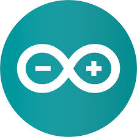
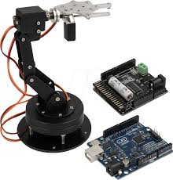
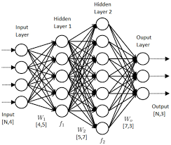

D
R
E
A
M
S
My name is Daffa, and I believe the future is built on lines of code and digital innovation. That's why my dream is to work in the technology industry. I want to be part of those who discover future solutions through robotics, the web, and machine learning, so that technology can be beneficial to all levels of society.
Why I chose robotics, web, and machine learning as the solution??


1. Robotics as a Helping Hand The real world has physical limitations. Some jobs are too dangerous for humans, some tasks are too tiring, and some precision is impossible for ordinary hands to achieve. That's where robotics comes in as a helping hand. I envision a future where mechanical assistants help the elderly at home, or drones deliver medical aid to remote, hard-to-reach areas.


2. Machine Learning as a Wise "Brain" However, a hand without a brain is just a rigid machine. Through Machine Learning, I want to give this technology "life." I want to create a system that doesn't just execute commands, but is able to learn from patterns, predict needs, and make intelligent decisions independently. Technology that can distinguish between urgent problems and those that can be postponed, just like human thinking, but at a speed thousands of times faster.
3. The Web as a Connecting "Bridge" Finally, all this sophistication is useless if it's difficult to access. This is where the Web plays its role as a "bridge." I want to ensure that control over this complex technology is at everyone's fingertips. Through a simple browser, a farmer in a village can monitor his land-management robot, or a doctor can monitor his smart healthcare system from across the world.